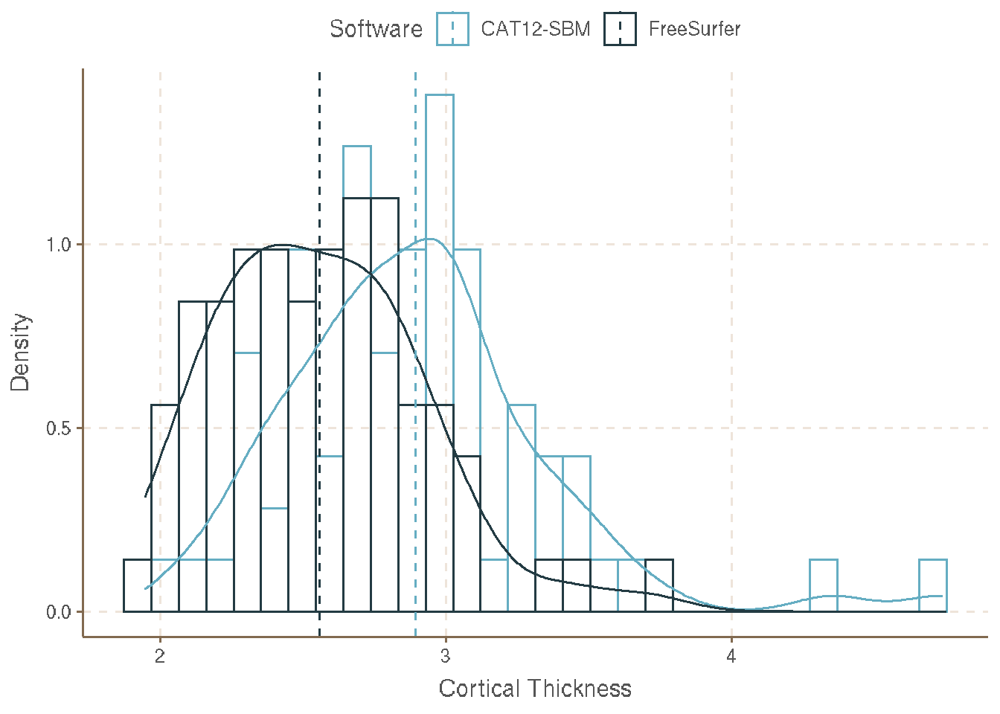
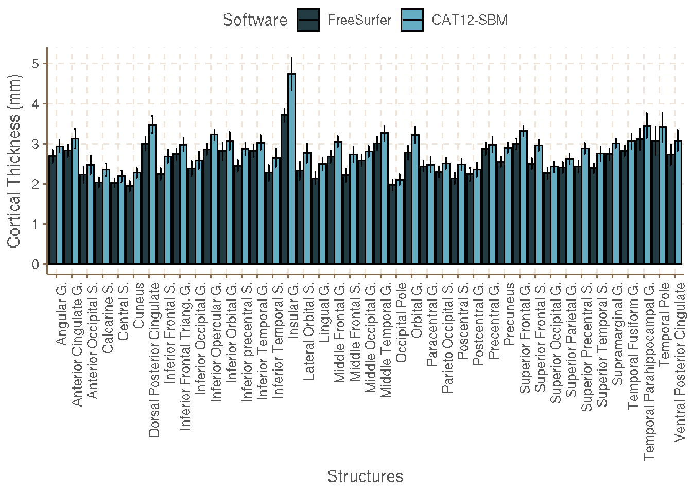
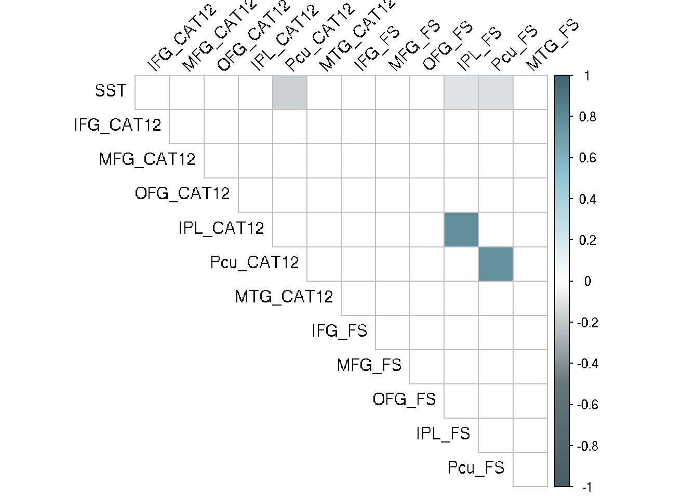
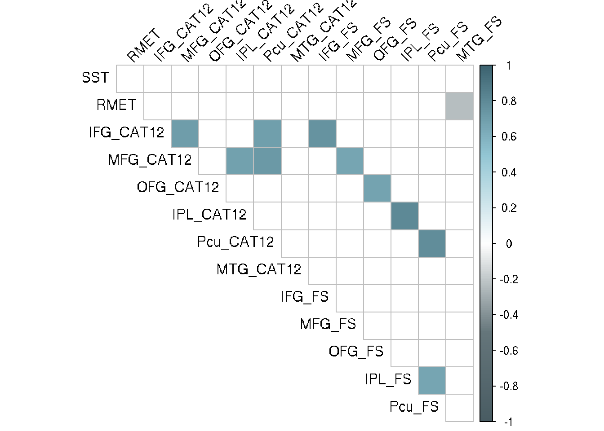
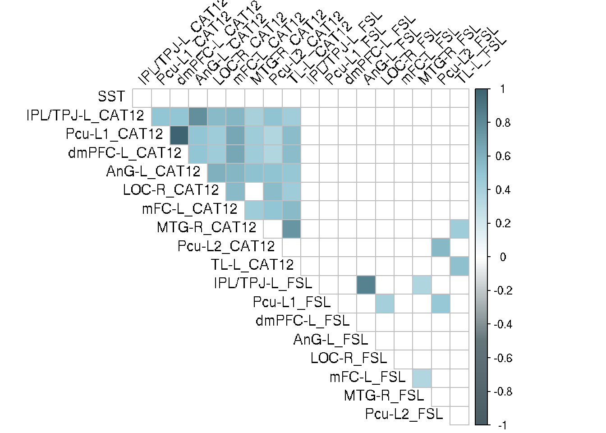
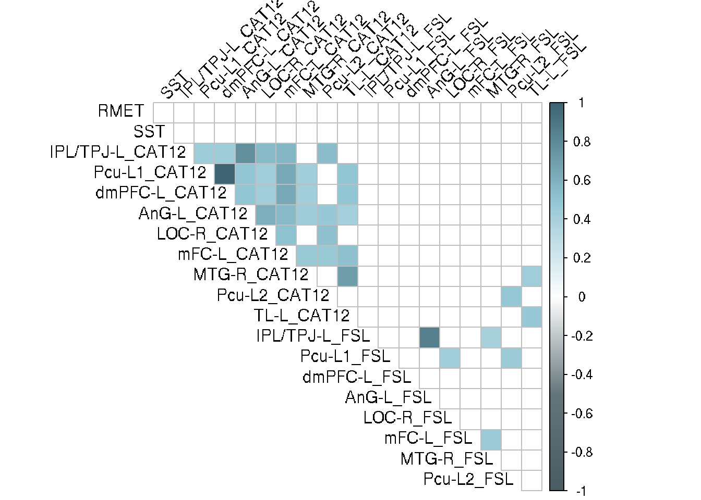

Last updated: 2020-10-29
Checks: 7 0
Knit directory: ToM-and-its-elusive-structural-substrate-code/
This reproducible R Markdown analysis was created with workflowr (version 1.6.2). The Checks tab describes the reproducibility checks that were applied when the results were created. The Past versions tab lists the development history.
Great! Since the R Markdown file has been committed to the Git repository, you know the exact version of the code that produced these results.
Great job! The global environment was empty. Objects defined in the global environment can affect the analysis in your R Markdown file in unknown ways. For reproduciblity it’s best to always run the code in an empty environment.
The command set.seed(20201026) was run prior to running the code in the R Markdown file. Setting a seed ensures that any results that rely on randomness, e.g. subsampling or permutations, are reproducible.
Great job! Recording the operating system, R version, and package versions is critical for reproducibility.
Nice! There were no cached chunks for this analysis, so you can be confident that you successfully produced the results during this run.
Great job! Using relative paths to the files within your workflowr project makes it easier to run your code on other machines.
Great! You are using Git for version control. Tracking code development and connecting the code version to the results is critical for reproducibility.
The results in this page were generated with repository version 80f0a03. See the Past versions tab to see a history of the changes made to the R Markdown and HTML files.
Note that you need to be careful to ensure that all relevant files for the analysis have been committed to Git prior to generating the results (you can use wflow_publish or wflow_git_commit). workflowr only checks the R Markdown file, but you know if there are other scripts or data files that it depends on. Below is the status of the Git repository when the results were generated:
Ignored files:
Ignored: .Rhistory
Ignored: analysis/.Rhistory
Untracked files:
Untracked: code/ct_prepro.m
Untracked: code/ct_prepro.mat
Untracked: code/ct_prepro_job.m
Untracked: code/vbm_prepro.m
Untracked: code/vbm_prepro.mat
Untracked: code/vbm_prepro_job.m
Untracked: data/ROIs_catROIs_aparc_a2009s_thickness.csv
Untracked: data/ROIs_catROIs_aparc_a2009s_thickness_91.csv
Untracked: data/SST.csv
Untracked: data/SST_RMET.csv
Untracked: data/design.png
Untracked: data/fscat.csv
Untracked: data/lh_ROIs_fsROIs_aparc_a2009s_thicknes.csv
Untracked: data/lh_ROIs_fsROIs_aparc_a2009s_thicknes_69.csv
Untracked: data/rh_ROIs_fsROIs_aparc_a2009s_thicknes.csv
Untracked: data/rh_ROIs_fsROIs_aparc_a2009s_thicknes_69.csv
Untracked: data/rois_ct.csv
Untracked: data/rois_rmet.csv
Untracked: data/rois_sst.csv
Unstaged changes:
Modified: analysis/_site.yml
Note that any generated files, e.g. HTML, png, CSS, etc., are not included in this status report because it is ok for generated content to have uncommitted changes.
These are the previous versions of the repository in which changes were made to the R Markdown (analysis/Workflow.Rmd) and HTML (docs/Workflow.html) files. If you’ve configured a remote Git repository (see ?wflow_git_remote), click on the hyperlinks in the table below to view the files as they were in that past version.
| File | Version | Author | Date | Message |
|---|---|---|---|---|
| html | 648c91e | JalilRT | 2020-10-29 | Build site. |
| Rmd | b9c6de5 | JalilRT | 2020-10-29 | Publish the initial files for ToM-and-its-elusive-structural-substrate-code |
| html | 9f522d4 | JalilRT | 2020-10-26 | Build site. |
| html | 285dc52 | JalilRT | 2020-10-26 | Build site. |
| Rmd | a3d8193 | JalilRT | 2020-10-26 | Publish the initial files for ToM-and-its-elusive-structural-substrate-code |
After BIDS arrangement, we download singularity image (.img) container from Poldracklab docker.
We run the following script in High performance Computing (HPC) cluster.
#!/bin/bash
module unload singularity/2.2
module load singularityce/3.5.3
export FS_LICENSE=/mnt/MD1200B/egarza/jrasgado/license.txt
export SINGULARITYENV_FS_LICENSE=/mnt/MD1200B/egarza/jrasgado/license.txt
container=/mnt/MD1200B/egarza/egarza/singularity_images/poldracklab_fmriprep-2020-01-14-933ad4693a12.img
export FSLDIR=/mnt/MD1200A/lconcha/lconcha/fsl_5.0.6
export PATH=${FSLDIR}/bin:${PATH}
. ${FSLDIR}/etc/fslconf/fsl.sh
export FSLPARALLEL=1
export LD_LIBRARY_PATH=${FSLDIR}/lib:${LD_LIBRARY_PATH}
##Top level directory
UP_LEVEL=/mnt/MD1200B/egarza/jrasgado/Pragmatic_studies/Pragmatic_language
subjid=`ls -d /mnt/MD1200B/egarza/jrasgado/Pragmatic_studies/Pragmatic_language/01*/sub-*`
for s in $subjid
do
this_subject=`basename $s`
this_subject=${this_subject/sub-/}
echo "submitting job for subject $this_subject"
fsl_sub -s openmp,8 -R 10 -N ct_${this_subject}_fsl \
singularity run -B /mnt:/mnt $container \
${UP_LEVEL}/01* \
${UP_LEVEL}/derivatives/fmriprep/output_fsr \
participant \
--participant_label $this_subject \
--skip_bids_validation \
--ignore fieldmaps \
--output-spaces T1w MNI152NLin2009cAsym fsaverage5\
--work-dir ${UP_LEVEL}/tmp/fmriprep/output_fsr/ \
--fs-license-file $FS_LICENSE \
--fs-no-reconall \
--resource-monitor \
--write-graph
echo ""
doneAfter fMRIprep output, we select subject_“MNI152NLin2009cAsym_desc-preproc_T1w.nii.gz” files and use it in fslvbm pipeline: https://fsl.fmrib.ox.ac.uk/fsl/fslwiki/FSLVBM/UserGuide
#!/bin/bash
# create a template list:
subjects=$(ls -d /misc/giora/lizcano7/vbm)
for g in $subjects; do
sub=%(basename $g);
echo $g >> template_list
doneWe create a general linear model (glm) design with ToM scores as covariables
glm design
We then run the fslvbm pipeline with design created
slicesdir `imglob *`
fslvbm_1_bet -b -f 0
fslvbm_2_template -a
fslvbm_3_proc
fslmaths GM_mod_merg -s 3.5 GM_mod_merg_s3.5
randomise -i GM_mod_merg_s3 -m GM_mask -o fslvbm -d design.mat -t design.con -T -n 5000 CAT12 as a extension of SPM software: https://www.fil.ion.ucl.ac.uk/spm/, is found in http://www.neuro.uni-jena.de/cat/
The present study follows the default pipeline provided in toolbox manual, using the GUI window to it.
#% List of open inputs
nrun = X; % enter the number of runs here
jobfile = {'~\vbm_prepro_job.m'};
jobs = repmat(jobfile, 1, nrun);
inputs = cell(0, nrun);
for crun = 1:nrun
end
spm('defaults', 'PET');
spm_jobman('run', jobs, inputs{:});Contrast and average were specified as in fslvbm follow up CAT12 manual: http://www.neuro.uni-jena.de/cat12/CAT12-Manual.pdf
We use as mask the whole brain and ROIs created.
#!/bin/bash
export SUBJECTS_DIR=/misc/giora/lizcano7/paper/fmriprep_grosor/
subj='ls /misc/giora/lizcano7/paper/fmriprep_grosor/sub-*'
for i in ${subj}; do
sub=`basename ${i}`
echo ${sub}
recon-all -s ${sub} -qcache
doneYou can run Surface Run Analysis using Qdec tool: https://surfer.nmr.mgh.harvard.edu/fswiki/FsTutorial/QdecGroupAnalysis_freeview
Extract cortical thickness based on Desikan-Killiany Atlas (‘aparc’) and/or Destrieux Atlas (‘aparc.a2009s’)
parc='aparc'
measure='thickness'
cd /misc/giora/lizcano7/paper/fmriprep_grosor/
export SUBJECTS_DIR=/misc/giora/lizcano7/paper/fmriprep_grosor/
subjects=$(ls -d sub*/)
echo "$subjects"
for h in 'lh rh'; do
aparcstats2table --subjects ${subjects} --hemi ${h} --meas ${measure} -p ${parc} --skip fsaverage --delimiter=comma --tablefile ${parc}_${h}_thickness.csv
done
asegstats2table --subjects ${subjects} --skip --meas volume --common-segs --segno 10 11 12 13 17 18 26 49 50 51 52 53 54 58 --delimiter comma --tablefile asegstats.csv
export SUBJECTS_DIR=fmriprep_ct/
freeview -v fmriprep_ct/sub-01/mri/T1.mgz fmriprep_ct/sub-01/mri/brainmask.mgz -f fmriprep_ct/sub-01/surf/lh.white:edgecolor=yellow fmriprep_ct/sub-01/surf/lh.pial:edgecolor=green fmriprep_ct/sub-01/surf/rh.white:edgecolor=yellow fmriprep_ct/sub-01/surf/rh.pial:edgecolor=green
recon-all -autorecon-pial -subjid sub-01export SUBJECTS_DIR=fmriprep_ct/
freeview -v fmriprep_grosor/sub-01/mri/brainmask.mgz \ fmriprep_grosor/sub-01/mri/wm.mgz:colormap=heat:opacity=0.4 \ -f fmriprep_grosor/sub-01/surf/lh.white:edgecolor=blue \ fmriprep_grosor/sub-01/surf/lh.pial:edgecolor=green \ fmriprep_grosor/sub-01/surf/rh.white:edgecolor=blue \ fmriprep_grosor/sub-01/surf/rh.pial:edgecolor=green \
fmriprep_grosor/sub-01/surf/rh.inflated:visible=0 \
fmriprep_grosor/sub-01/surf/lh.inflated:visible=0
recon-all -autorecon2-wm -autorecon3 -subjid sub-01We applied the same preprocessing of CAT12VBM
Preprocessing (provided in .mat file) for SBM are needed.
% List of open inputs
nrun = X; % enter the number of runs here
jobfile = {'~\ctprepro_job.m'};
jobs = repmat(jobfile, 1, nrun);
inputs = cell(0, nrun);
for crun = 1:nrun
end
spm('defaults', 'PET');
spm_jobman('run', jobs, inputs{:});Steps for analysis are described in CAT12 manual
ROIs analysis were made using mask created and by extracting values and correlated with ToM scores and other structures.
#!/bin/bash
##Obtener ROIs apartir de coordenadas
##Escribir direcciones de guardado y lectura
#Nombre de dónde se tomó las coordenadas
Nombre=rois/Neurosynth
#dirección de guardado
mkdir -p /misc/giora/lizcano7/paper/vbm/${Nombre}
estructuras=`ls -d /misc/giora/lizcano7/paper/vbm/${Nombre}`
mkdir -p ${estructuras}/Mask
mkdir -p ${estructuras}/inflated
mkdir -p ${estructuras}/bin
#Coordenadas
x=(47 18 70 44 70 20)
y=(87 30 66 36 35 65)
z=(27 57 20 56 46 20)
NEstructura=(mPfC lOC TPole Precuneus Angular MTG)
echo "Iniciando script"
## asignarle valores a i dependiendo de la cantidad de ROIs a obtener, comenzando de 0, es decir, si son 3, colocar 0,1,2; si son 5: 0,1,2,3,4
for i in {0..5}; do ## colocar el número de rois empezando de 0
for Coordx in ${x[i]}; do
echo "${Coordx}"
for Coordy in ${y[i]}; do
echo "${Coordy}"
for Coordz in ${z[i]}; do
echo "${Coordz}"
for estruc in ${NEstructura[i]}; do
echo "generando datos para ${estruc}"
#coordenadas:
echo "Máscara"
fslmaths /home/inb/lconcha/fmrilab_software/fsl_5.0.6/data/standard/avg152T1.nii.gz -mul 0 \
-add 1 -roi ${Coordx} 1 ${Coordy} 1 ${Coordz} 1 0 1 ${estructuras}/Mask/${estruc} -odt float
#inflated
echo "inflado"
fslmaths ${estructuras}/Mask/${estruc}.nii.gz -kernel sphere 10 -fmean ${estructuras}/inflated/${estruc}.nii.gz -odt float
#binario:
echo "binarización"
fslmaths ${estructuras}/inflated/${estruc}.nii.gz -bin ${estructuras}/bin/bin_inflated_${estruc}_mask.nii.gz
done
done
done
done
doneWe extract cortical thickness values from each software with Destrieux Atlas (aparc a2009s) and correlated with ToM scores and other structures.
library(dplyr)
library(ggplot2)
library(tibble)
library(ggthemr)
library(corrplot)
library(tidyverse)
library(plyr)
library(rstatix)
##colors
col <- colorRampPalette(c("#495c63", "#65767b", "#FFFFFF","#93c6d4","#3d6470"))#### SST 91 ####
# left
rois_cat_91<-read.csv("data/ROIs_catROIs_aparc_a2009s_thickness_91.csv")
left_cat_91<- select(as.tibble(rois_cat_91[3:ncol(rois_cat_91)]), starts_with('l'))
cat.lg_91<-colMeans(left_cat_91)
# right
right_cat_91<- select(as.tibble(rois_cat_91[4:ncol(rois_cat_91)]), starts_with('r'))
cat.rg_91<-colMeans(right_cat_91)
# For correlation plot
join.cat.rl_91<-data_frame(left_cat_91,right_cat_91)
## FreeSurfer ##
# left
rois_fs_91<-read.csv("data/lh_ROIs_fsROIs_aparc_a2009s_thicknes.csv")
left_fs_91<- select(as.tibble(rois_fs_91), starts_with('l'))
fs.lg_91<-colMeans(left_fs_91[,-1])
col.lr.fs<-str_replace(colnames(left_fs_91),"_thickness","")
colnames(left_fs_91)<-col.lr.fs
col.lr.fs<-str_replace(colnames(left_fs_91),"h_","")
colnames(left_fs_91)<-col.lr.fs
# right
rois_fs_r_91<-read.csv("data/rh_ROIs_fsROIs_aparc_a2009s_thicknes.csv")
right_fs_91<- select(as.tibble(rois_fs_r_91), starts_with('r'))
fs.rg_91<-colMeans(right_fs_91[,-1])
col.lr.fs<-str_replace(colnames(right_fs_91),"_thickness","")
colnames(right_fs_91)<-col.lr.fs
col.lr.fs<-str_replace(colnames(right_fs_91),"h_","")
colnames(right_fs_91)<-col.lr.fs
# For correlation plot
join.fs.rl_91<-data_frame(left_fs_91,right_fs_91)
# Selecting ROIs
rois.join.cat.91<- join.cat.rl_91 %>% select("lG_front_inf.Triangul","rG_front_inf.Triangul","lG_front_middle","rG_front_middle","lG_orbital","rG_orbital","lG_pariet_inf.Angular","rG_pariet_inf.Angular","lG_precuneus","rG_precuneus","lG_temporal_middle","rG_temporal_middle")
rois.cat.91<-rois.join.cat.91 %>% mutate(IFG_CAT12=rowMeans(rois.join.cat.91[c("lG_front_inf.Triangul","rG_front_inf.Triangul")]),MFG_CAT12=rowMeans(rois.join.cat.91[c("lG_front_middle","rG_front_middle")]),OFG_CAT12=rowMeans(rois.join.cat.91[c("lG_orbital","rG_orbital")]),IPL_CAT12=rowMeans(rois.join.cat.91[c("lG_pariet_inf.Angular","rG_pariet_inf.Angular")]),Pcu_CAT12=rowMeans(rois.join.cat.91[c("lG_precuneus","rG_precuneus")]),MTG_CAT12=rowMeans(rois.join.cat.91[c("lG_temporal_middle","rG_temporal_middle")]))
rois.join.fs.91<- join.fs.rl_91 %>% select("lG_front_inf.Triangul","rG_front_inf.Triangul","lG_front_middle","rG_front_middle","lG_orbital","rG_orbital","lG_pariet_inf.Angular","rG_pariet_inf.Angular","lG_precuneus","rG_precuneus","lG_temporal_middle","rG_temporal_middle")
rois.fs.91<-rois.join.fs.91 %>% mutate(IFG_FS=rowMeans(rois.join.fs.91[c("lG_front_inf.Triangul","rG_front_inf.Triangul")]),MFG_FS=rowMeans(rois.join.fs.91[c("lG_front_middle","rG_front_middle")]),OFG_FS=rowMeans(rois.join.fs.91[c("lG_orbital","rG_orbital")]),IPL_FS=rowMeans(rois.join.fs.91[c("lG_pariet_inf.Angular","rG_pariet_inf.Angular")]),Pcu_FS=rowMeans(rois.join.fs.91[c("lG_precuneus","rG_precuneus")]),MTG_FS=rowMeans(rois.join.fs.91[c("lG_temporal_middle","rG_temporal_middle")]))
rois.cat.fs.91<-data_frame(rois.cat.91[-c(1:12)],rois.fs.91[-c(1:12)])
row.names(rois.cat.fs.91)<-rois_fs_91$lh.aparc.a2009s.thicknessFrom the resulting joint matrix of each cortical thickness subject, we select those regions who has shown relation with theory of mind. For this study we selected:
# columns means for both hemispheres
cat.rl_91<-data.frame(cat.lg_91,cat.rg_91)
cat_91<-cat.rl_91 %>% mutate(mean=rowMeans(cbind(cat.lg_91,cat.rg_91), na.rm=T))
row.names(cat_91)<-row.names(cat.rl_91)
r.cat.sd<-sapply(right_cat_91[,-1],sd,na.rm=TRUE)
l.cat.sd<-sapply(left_cat_91[,-1],sd,na.rm=TRUE)
cat.sd<-data.frame(l.cat.sd,r.cat.sd)
cat.sd<-cat.sd %>% mutate(meansd=rowMeans(cbind(l.cat.sd,r.cat.sd), na.rm=T))
cat_91<-data.frame(cat.rl_91[,0],cat_91)
fs.rl_91<-data.frame(fs.lg_91,fs.rg_91)
fs_91<-fs.rl_91 %>% mutate(mean=rowMeans(cbind(fs.lg_91,fs.rg_91), na.rm=T))
fs_91<-data.frame(fs.rl_91[,0],fs_91)
row.names(fs_91)<-row.names(fs.rl_91)
r.fs.sd<-sapply(right_fs_91[,-1],sd,na.rm=TRUE)
l.fs.sd<-sapply(left_fs_91[,-1],sd,na.rm=TRUE)
fs.sd<-data.frame(l.fs.sd,r.fs.sd)
fs.sd<-fs.sd %>% mutate(meansd=rowMeans(cbind(l.fs.sd,r.fs.sd), na.rm=T))
row.fs.91.lr<-str_replace(row.names(fs_91),"_thickness","")
row.names(fs_91)<-row.fs.91.lr
row.fs.91.lr<-str_replace(row.names(fs_91),"h_","")
row.names(fs_91)<-row.fs.91.lr
fs<-data.frame(fs_91,fs.sd)
cat<-data.frame(na.omit(cat_91),cat.sd)
fs.cat<-merge(cat[3],fs[3],by="row.names")
fs.cat.sd<-merge(cat[6],fs[6],by="row.names")
fs.cat.2.sd<-data.frame(fs.cat,fs.cat.sd[-1])
colnames(fs.cat)[2]<-"CAT12-SBM"
colnames(fs.cat)[3]<-"FreeSurfer"
colnames(fs.cat.2.sd)[2:5]<-c("CAT12-SBM","FreeSurfer","CATsd","FSsd")
ggthemr("fresh")
CTT<-fs.cat %>% gather("Software","CT",2:3)
levels(CTT$Software)[1]<-"CAT12-SBM"
levels(CTT$Software)[2]<-"FreeSurfer"
legend_ord <- factor(CTT$Software, levels = rev(levels(CTT$Software)))
mu <- ddply(CTT, "Software", summarise, grp.mean=mean(CT))
CT_his<-ggplot(CTT, aes(x=CT, fill=Software, color=Software)) +
geom_histogram(aes(y=..density..),position="identity", alpha=0.7)+geom_density(alpha=0.42)+
geom_vline(data=mu, aes(xintercept=grp.mean, color=Software),
linetype="dashed")+
theme(legend.position="top")+
labs(x="Cortical Thickness", y = "Density")
CT_his+
scale_fill_discrete(breaks=legend_ord)+
scale_color_discrete(breaks=legend_ord)
| Version | Author | Date |
|---|---|---|
| 648c91e | JalilRT | 2020-10-29 |
CTT %>% wilcox_test(CT~Software, alternative = "two.sided", mu = 0,
paired = FALSE)%>%
adjust_pvalue(method = "bonferroni")# A tibble: 1 x 8
.y. group1 group2 n1 n2 statistic p p.adj
<chr> <chr> <chr> <int> <int> <dbl> <dbl> <dbl>
1 CT CAT12-SBM FreeSurfer 74 74 4001 0.00000129 0.00000129CTT %>% wilcox_effsize(CT~Software, alternative = "two.sided", mu = 0,
paired = FALSE)# A tibble: 1 x 7
.y. group1 group2 effsize n1 n2 magnitude
* <chr> <chr> <chr> <dbl> <int> <int> <ord>
1 CT CAT12-SBM FreeSurfer 0.398 74 74 moderate CTT %>% cohens_d(CT~Software, var.equal = FALSE)# A tibble: 1 x 7
.y. group1 group2 effsize n1 n2 magnitude
* <chr> <chr> <chr> <dbl> <int> <int> <ord>
1 CT CAT12-SBM FreeSurfer 0.821 74 74 large ## bar plot
CTT.sd<-fs.cat.2.sd[c(1,4:5)] %>% gather("Software","sd",2:3)
#CT<-data.frame(CTT,CTT.sd[3])
## write and rename CT file
CT<-read_csv("data/fscat.csv")
levels(CT$Software)[1]<-"CAT12-SBM"
levels(CT$Software)[2]<-"FreeSurfer"
legend_ord <- factor(CT$Software, levels = rev(levels(CT$Software)))
CT_bars<-ggplot(CT, aes(x=names, y=CT, fill=legend_ord,color=legend_ord))+
geom_bar(stat="identity", position=position_dodge())+
theme(axis.text.x = element_text(angle = 90, hjust = 1),
legend.position = "top")+
labs(x="Structures",y="Cortical Thickness (mm)")+
scale_color_manual(values=c("black", "black"),name="Software")+
scale_fill_manual(values=c("#233b43","#65adc2"),name="Software")
CT_bars+
geom_errorbar(aes(ymin=CT-sd, ymax=CT+sd),
width=.15, # Width of the error bars
position=position_dodge(.9))
| Version | Author | Date |
|---|---|---|
| 648c91e | JalilRT | 2020-10-29 |
sst_val<-read_csv("data/SST.csv")
rois.cat.fs.91<-data_frame(sst_val,rois.cat.fs.91)
roi.m.ct_91<-cor(rois.cat.fs.91)
p.mat<-cor.mtest(roi.m.ct_91)
corrplot(roi.m.ct_91, method="color", col=col(200),
type="upper", tl.col="black", tl.srt=45,
p.mat = p.mat$p, sig.level = 0.001, insig = "blank", diag=FALSE,
addgrid.col = "gray")
| Version | Author | Date |
|---|---|---|
| 648c91e | JalilRT | 2020-10-29 |
##ROIS SST-RMET - 69 ###
## CAT12 ##
# left
rois_cat<-read.csv("data/ROIs_catROIs_aparc_a2009s_thickness.csv")
left_cat<- select(as.tibble(rois_cat[3:ncol(rois_cat)]), starts_with('l'))
cat.lg<-colMeans(left_cat)
# right
right_cat<- select(as.tibble(rois_cat[4:ncol(rois_cat)]), starts_with('r'))
cat.rg<-colMeans(right_cat)
# For correlation plot
join.cat.rl<-data_frame(left_cat,right_cat)
# Both hemispheres
cat.rl<-data.frame(cat.lg,cat.rg)
cat<-cat.rl %>% mutate(mean=rowMeans(cbind(cat.lg,cat.rg), na.rm=T))
cat<-data.frame(cat.rl[,0],cat)
r.cat.sd<-sapply(right_cat,sd,na.rm=TRUE)
l.cat.sd<-sapply(left_cat,sd,na.rm=TRUE)
cat.sd<-data.frame(l.cat.sd,r.cat.sd)
cat.sd<-cat.sd %>% mutate(mean=rowMeans(cbind(l.cat.sd,r.cat.sd), na.rm=T))
cat<-data.frame(cat,cat.sd)
## FreeSurfer ##
# left
rois_fs<-read.csv("data/lh_ROIs_fsROIs_aparc_a2009s_thicknes_69.csv")
left_fs<- select(as.tibble(rois_fs), starts_with('l'))
fs.lg<-colMeans(left_fs[,-1])
# right
rois_fs_r<-read.csv("data/rh_ROIs_fsROIs_aparc_a2009s_thicknes_69.csv")
right_fs<- select(as.tibble(rois_fs_r), starts_with('r'))
fs.rg<-colMeans(right_fs[,-1])
col.lr.fs<-str_replace(colnames(left_fs),"_thickness","")
colnames(left_fs)<-col.lr.fs
col.lr.fs<-str_replace(colnames(left_fs),"h_","")
colnames(left_fs)<-col.lr.fs
col.lr.fs<-str_replace(colnames(right_fs),"_thickness","")
colnames(right_fs)<-col.lr.fs
col.lr.fs<-str_replace(colnames(right_fs),"h_","")
colnames(right_fs)<-col.lr.fs
# both hemispheres
fs.rl<-data.frame(fs.lg,fs.rg)
fs<-fs.rl %>% mutate(mean=rowMeans(cbind(fs.lg,fs.rg), na.rm=T))
fs<-data.frame(fs.rl[,0],fs)
r.fs.sd<-sapply(right_fs[,-1],sd,na.rm=TRUE)
l.fs.sd<-sapply(left_fs[,-1],sd,na.rm=TRUE)
fs.sd<-data.frame(l.fs.sd,r.fs.sd)
fs.sd<-fs.sd %>% mutate(mean=rowMeans(cbind(l.fs.sd,r.fs.sd), na.rm=T))
fs<-data.frame(fs,fs.sd)
# For correlation plot
join.fs.rl<-data_frame(left_fs,right_fs)
# Selecting ROIs
rois.join.cat<- join.cat.rl %>% select("lG_front_inf.Triangul","rG_front_inf.Triangul","lG_front_middle","rG_front_middle","lG_orbital","rG_orbital","lG_pariet_inf.Angular","rG_pariet_inf.Angular","lG_precuneus","rG_precuneus","lG_temporal_middle","rG_temporal_middle")
rois.cat<-rois.join.cat %>% mutate(IFG_CAT12=rowMeans(rois.join.cat[c("lG_front_inf.Triangul","rG_front_inf.Triangul")]),MFG_CAT12=rowMeans(rois.join.cat[c("lG_front_middle","rG_front_middle")]),OFG_CAT12=rowMeans(rois.join.cat[c("lG_orbital","rG_orbital")]),IPL_CAT12=rowMeans(rois.join.cat[c("lG_pariet_inf.Angular","rG_pariet_inf.Angular")]),Pcu_CAT12=rowMeans(rois.join.cat[c("lG_precuneus","rG_precuneus")]),MTG_CAT12=rowMeans(rois.join.cat[c("lG_temporal_middle","rG_temporal_middle")]))
rois.join.fs<- join.fs.rl %>% select("lG_front_inf.Triangul","rG_front_inf.Triangul","lG_front_middle","rG_front_middle","lG_orbital","rG_orbital","lG_pariet_inf.Angular","rG_pariet_inf.Angular","lG_precuneus","rG_precuneus","lG_temporal_middle","rG_temporal_middle")
rois.fs<-rois.join.fs %>% mutate(IFG_FS=rowMeans(rois.join.fs[c("lG_front_inf.Triangul","rG_front_inf.Triangul")]),MFG_FS=rowMeans(rois.join.fs[c("lG_front_middle","rG_front_middle")]),OFG_FS=rowMeans(rois.join.fs[c("lG_orbital","rG_orbital")]),IPL_FS=rowMeans(rois.join.fs[c("lG_pariet_inf.Angular","rG_pariet_inf.Angular")]),Pcu_FS=rowMeans(rois.join.fs[c("lG_precuneus","rG_precuneus")]),MTG_FS=rowMeans(rois.join.fs[c("lG_temporal_middle","rG_temporal_middle")]))
rois.cat.fs<-data_frame(rois.cat[-c(1:12)],rois.fs[-c(1:12)])
row.names(rois.cat.fs)<-rois_fs$lh.aparc.a2009s.thicknesssst_rmet_val<-read_csv("data/SST_RMET.csv")
rois.cat.fs<-data_frame(sst_rmet_val,rois.cat.fs)
roi.m.ct<-cor(rois.cat.fs)
p.mat<-cor.mtest(roi.m.ct)
corrplot(roi.m.ct, method="color", col=col(200),
type="upper", tl.col="black", tl.srt=45,
p.mat = p.mat$p, sig.level = 0.001, insig = "blank", diag=FALSE,
addgrid.col = "gray")
| Version | Author | Date |
|---|---|---|
| 648c91e | JalilRT | 2020-10-29 |
Extract Volume from FSL using fslstats function
Extract Volume from CAT12-VBM using marsbars toolbox: http://marsbar.sourceforge.net/
Correlation plot:
rois<-read.csv("data/rois_sst.csv")
rois.names.vol<-c("SST","IPL/TPJ-L_CAT12","Pcu-L1_CAT12","dmPFC-L_CAT12","AnG-L_CAT12","LOC-R_CAT12","mFC-L_CAT12","MTG-R_CAT12",
"Pcu-L2_CAT12","TL-L_CAT12","IPL/TPJ-L_FSL","Pcu-L1_FSL","dmPFC-L_FSL","AnG-L_FSL","LOC-R_FSL",
"mFC-L_FSL","MTG-R_FSL","Pcu-L2_FSL","TL-L_FSL")
roi.m<-cor(rois)
colnames(roi.m)<-rois.names.vol
rownames(roi.m)<-rois.names.vol
p.mat<-cor.mtest(rois)
corrplot(roi.m, method="color", col=col(200),
type="upper", tl.col="black", tl.srt=45,
p.mat = p.mat$p, sig.level = 0.001, insig = "blank", diag=FALSE,
addgrid.col = "gray")
| Version | Author | Date |
|---|---|---|
| 648c91e | JalilRT | 2020-10-29 |
rois_69<-read.csv("data/rois_rmet.csv")
rois.names.vol<-c("RMET","SST","IPL/TPJ-L_CAT12","Pcu-L1_CAT12","dmPFC-L_CAT12","AnG-L_CAT12","LOC-R_CAT12","mFC-L_CAT12","MTG-R_CAT12",
"Pcu-L2_CAT12","TL-L_CAT12","IPL/TPJ-L_FSL","Pcu-L1_FSL","dmPFC-L_FSL","AnG-L_FSL","LOC-R_FSL",
"mFC-L_FSL","MTG-R_FSL","Pcu-L2_FSL","TL-L_FSL")
roi.m.69<-cor(rois_69)
colnames(roi.m.69)<-rois.names.vol
rownames(roi.m.69)<-rois.names.vol
p.mat<-cor.mtest(rois_69)
corrplot(roi.m.69, method="color", col=col(200),
type="upper", tl.col="black", tl.srt=45,
p.mat = p.mat$p, sig.level = 0.001, insig = "blank", diag=FALSE,
addgrid.col = "gray")
| Version | Author | Date |
|---|---|---|
| 648c91e | JalilRT | 2020-10-29 |
sessionInfo()R version 3.6.3 (2020-02-29)
Platform: x86_64-pc-linux-gnu (64-bit)
Running under: Ubuntu 20.04.1 LTS
Matrix products: default
BLAS: /usr/lib/x86_64-linux-gnu/blas/libblas.so.3.9.0
LAPACK: /usr/lib/x86_64-linux-gnu/lapack/liblapack.so.3.9.0
locale:
[1] LC_CTYPE=en_US.UTF-8 LC_NUMERIC=C
[3] LC_TIME=es_MX.UTF-8 LC_COLLATE=en_US.UTF-8
[5] LC_MONETARY=es_MX.UTF-8 LC_MESSAGES=en_US.UTF-8
[7] LC_PAPER=es_MX.UTF-8 LC_NAME=C
[9] LC_ADDRESS=C LC_TELEPHONE=C
[11] LC_MEASUREMENT=es_MX.UTF-8 LC_IDENTIFICATION=C
attached base packages:
[1] stats graphics grDevices utils datasets methods base
other attached packages:
[1] rstatix_0.6.0 plyr_1.8.6 forcats_0.5.0 stringr_1.4.0
[5] purrr_0.3.4 readr_1.4.0 tidyr_1.1.2 tidyverse_1.3.0
[9] corrplot_0.84 ggthemr_1.1.0 tibble_3.0.4 ggplot2_3.3.2
[13] dplyr_1.0.2 workflowr_1.6.2
loaded via a namespace (and not attached):
[1] matrixStats_0.57.0 fs_1.5.0 lubridate_1.7.9 httr_1.4.2
[5] rprojroot_1.3-2 tools_3.6.3 backports_1.1.10 utf8_1.1.4
[9] R6_2.4.1 DBI_1.1.0 colorspace_1.4-1 withr_2.3.0
[13] tidyselect_1.1.0 curl_4.3 compiler_3.6.3 git2r_0.27.1
[17] cli_2.1.0 rvest_0.3.6 xml2_1.3.2 sandwich_3.0-0
[21] labeling_0.4.2 scales_1.1.1 mvtnorm_1.1-1 digest_0.6.27
[25] foreign_0.8-75 rmarkdown_2.5 rio_0.5.16 pkgconfig_2.0.3
[29] htmltools_0.5.0 dbplyr_1.4.4 rlang_0.4.8 readxl_1.3.1
[33] rstudioapi_0.11 farver_2.0.3 generics_0.0.2 zoo_1.8-8
[37] jsonlite_1.7.1 zip_2.1.1 car_3.0-10 magrittr_1.5
[41] modeltools_0.2-23 Matrix_1.2-18 Rcpp_1.0.5 munsell_0.5.0
[45] fansi_0.4.1 abind_1.4-5 lifecycle_0.2.0 stringi_1.5.3
[49] multcomp_1.4-14 whisker_0.4 yaml_2.2.1 carData_3.0-4
[53] MASS_7.3-53 grid_3.6.3 blob_1.2.1 parallel_3.6.3
[57] promises_1.1.1 crayon_1.3.4 lattice_0.20-38 haven_2.3.1
[61] splines_3.6.3 hms_0.5.3 knitr_1.30 pillar_1.4.6
[65] codetools_0.2-16 stats4_3.6.3 reprex_0.3.0 glue_1.4.2
[69] evaluate_0.14 data.table_1.13.2 modelr_0.1.8 vctrs_0.3.4
[73] httpuv_1.5.4 cellranger_1.1.0 gtable_0.3.0 assertthat_0.2.1
[77] xfun_0.18 openxlsx_4.2.2 coin_1.3-1 libcoin_1.0-6
[81] broom_0.7.2 later_1.1.0.1 survival_3.1-8 TH.data_1.0-10
[85] ellipsis_0.3.1